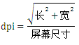

概述
手机屏幕根据密度范围分为五种：低、中、高、超高、超超高，为了确保界面元素在不同的屏幕都能合适的展示，在设计界面元素的 UI 时，UI 工程师建议统一采用 dpi (Dots Per Inch) 来定义界面元素。
参考
规则
计算手机dpi，需要知道手机屏幕尺寸和手机分辨率。即：

answer:1.根据屏幕尺寸,算出dpi. 根据上述公式,算出对角线分辨率/屏幕尺寸=dpi answer:2.dpi > 320 选择480, dpi > 240 选择320, dpi > 160 选择240, dpi 最少设置160 answer:3.调试屏幕的时候,要算出dpi,追加到device tree node name 后面,例如 mdss_dsi_ili9881d_720p_video_dpi_320
根据屏幕size 分辨率自动设置dpi
--- a/A6650_Unpacking_Tool/BOOT.XF.4.1/boot_images/QcomPkg/SocPkg/AgattiPkg/Library/MDPPlatformLib/MDPPlatformLib.c
+++ b/A6650_Unpacking_Tool/BOOT.XF.4.1/boot_images/QcomPkg/SocPkg/AgattiPkg/Library/MDPPlatformLib/MDPPlatformLib.c
@@ -224,10 +224,10 @@ const PanelDTInfoType fastBootPanelList[] =
{
/*Supported Panels*/
PANEL_CREATE_ENTRY("hx8394f_720p_video", MDPPLATFORM_PANEL_HX8394F_720P_VIDEO, "qcom,mdss_dsi_hx8394f_720p_video:", DISP_INTF_DSI, DISP_TOPOLOGY_CONFIG_NONE, DISP_TIMING_CONFIG_NONE, PLL_OVERRIDE_NONE, DISP_MODE_SINGLE_DSI, DISP_MODE_SINGLE_DSI, DISP_MODE_SINGLE_DSI),
- PANEL_CREATE_ENTRY("ili9881d_720p_video", MDPPLATFORM_PANEL_ILI9881D_720P_VIDEO, "qcom,mdss_dsi_ili9881d_720p_video:", DISP_INTF_DSI, DISP_TOPOLOGY_CONFIG_NONE, DISP_TIMING_CONFIG_NONE, PLL_OVERRIDE_NONE, DISP_MODE_SINGLE_DSI, DISP_MODE_SINGLE_DSI, DISP_MODE_SINGLE_DSI),
+ PANEL_CREATE_ENTRY("ili9881d_720p_video", MDPPLATFORM_PANEL_ILI9881D_720P_VIDEO, "qcom,mdss_dsi_ili9881d_720p_video_dpi_320:", DISP_INTF_DSI, DISP_TOPOLOGY_CONFIG_NONE, DISP_TIMING_CONFIG_NONE, PLL_OVERRIDE_NONE, DISP_MODE_SINGLE_DSI, DISP_MODE_SINGLE_DSI, DISP_MODE_SINGLE_DSI),
- PANEL_CREATE_ENTRY("ili7807S_1080p_video", MDPPLATFORM_PANEL_ILI7807S_1080P_VIDEO, "qcom,mdss_dsi_ili7807S_1080p_video:", DISP_INTF_DSI, DISP_TOPOLOGY_CONFIG_NONE, DISP_TIMING_CONFIG_NONE, PLL_OVERRIDE_NONE, DISP_MODE_SINGLE_DSI, DISP_MODE_SINGLE_DSI, DISP_MODE_SINGLE_DSI),
- PANEL_CREATE_ENTRY("ft8006s_720p_video", MDPPLATFORM_PANEL_FT8006S_720P_VIDEO, "qcom,mdss_dsi_ft8006s_720p_video:", DISP_INTF_DSI, DISP_TOPOLOGY_CONFIG_NONE, DISP_TIMING_CONFIG_NONE, PLL_OVERRIDE_NONE, DISP_MODE_SINGLE_DSI, DISP_MODE_SINGLE_DSI, DISP_MODE_SINGLE_DSI),
+ PANEL_CREATE_ENTRY("ili7807S_1080p_video", MDPPLATFORM_PANEL_ILI7807S_1080P_VIDEO, "qcom,mdss_dsi_ili7807S_1080p_video_dpi_480:", DISP_INTF_DSI, DISP_TOPOLOGY_CONFIG_NONE, DISP_TIMING_CONFIG_NONE, PLL_OVERRIDE_NONE, DISP_MODE_SINGLE_DSI, DISP_MODE_SINGLE_DSI, DISP_MODE_SINGLE_DSI),
+ PANEL_CREATE_ENTRY("ft8006s_720p_video", MDPPLATFORM_PANEL_FT8006S_720P_VIDEO, "qcom,mdss_dsi_ft8006s_720p_video_dpi_320:", DISP_INTF_DSI, DISP_TOPOLOGY_CONFIG_NONE, DISP_TIMING_CONFIG_NONE, PLL_OVERRIDE_NONE, DISP_MODE_SINGLE_DSI, DISP_MODE_SINGLE_DSI, DISP_MODE_SINGLE_DSI),
PANEL_CREATE_ENTRY("truly_nt36525_hdplus_vid", MDPPLATFORM_PANEL_NT36525_TRULY_HDPLUS_VIDEO, "qcom,mdss_dsi_nt36525_truly_video:", DISP_INTF_DSI, DISP_TOPOLOGY_CONFIG_NONE, DISP_TIMING_CONFIG_NONE,PLL_OVERRIDE_NONE, DISP_MODE_SINGLE_DSI, DISP_MODE_SINGLE_DSI, DISP_MODE_SINGLE_DSI),
diff --git a/QSSI.12/system/core/init/pax_init.cpp b/QSSI.12/system/core/init/pax_init.cpp
index a31b44bc867..260d6899040 100755
--- a/QSSI.12/system/core/init/pax_init.cpp
+++ b/QSSI.12/system/core/init/pax_init.cpp
@@ -13,7 +13,6 @@ namespace init {
void pax_import_kernel_nv(const std::string &key, const std::string& value)
{
const char *name = key.c_str();
-
if (!strcmp(name, "TERMINAL_NAME"))
{
InitPropertySet("ro.boot.boardname", value.c_str());
@@ -227,6 +226,10 @@ void pax_import_kernel_nv(const std::string &key, const std::string& value)
InitPropertySet("ro.fac.wifimac", value.c_str());
InitPropertySet("pax.wifi.mac", value.c_str());
}
+ else if(!strcmp(name, "msm_drm.dsi_display0"))//dpi
+ {
+ InitPropertySet("ro.sf.lcd_density", value.substr(value.size()-4,3));
+ }
//[FEATURE]-Add-BEGIN by (xielianxiong@paxsz.com), 2021/12/29 for apk verify pax signature
#ifdef PAXDROID_PCI
diff --git a/UM.9.15/vendor/qcom/proprietary/devicetree-4.19/qcom/a6650/dsi-panel-ft8006s-720p-video.dtsi b/UM.9.15/vendor/qcom/proprietary/devicetree-4.19/qcom/a6650/dsi-panel-ft8006s-720p-video.dtsi
index dd87a36972e..9e099391b9f 100755
--- a/UM.9.15/vendor/qcom/proprietary/devicetree-4.19/qcom/a6650/dsi-panel-ft8006s-720p-video.dtsi
+++ b/UM.9.15/vendor/qcom/proprietary/devicetree-4.19/qcom/a6650/dsi-panel-ft8006s-720p-video.dtsi
@@ -11,7 +11,7 @@
*/
&mdss_mdp {
- dsi_ft8006s_720p_video: qcom,mdss_dsi_ft8006s_720p_video {
+ dsi_ft8006s_720p_video: qcom,mdss_dsi_ft8006s_720p_video_dpi_320 {^M
qcom,mdss-dsi-panel-name ="ft8006s video mode dsi panel without DSC";
qcom,mdss-dsi-panel-type = "dsi_video_mode";
qcom,dsi-ctrl-num = <0>;
@@ -72,4 +72,4 @@
};
};
};
-};